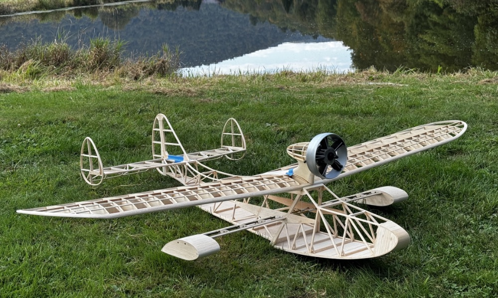
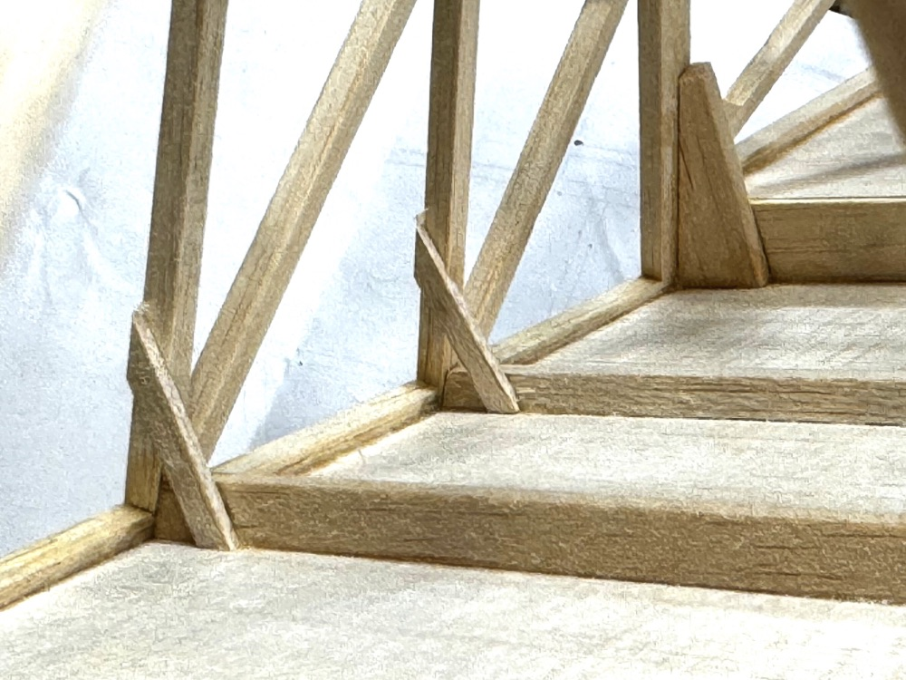
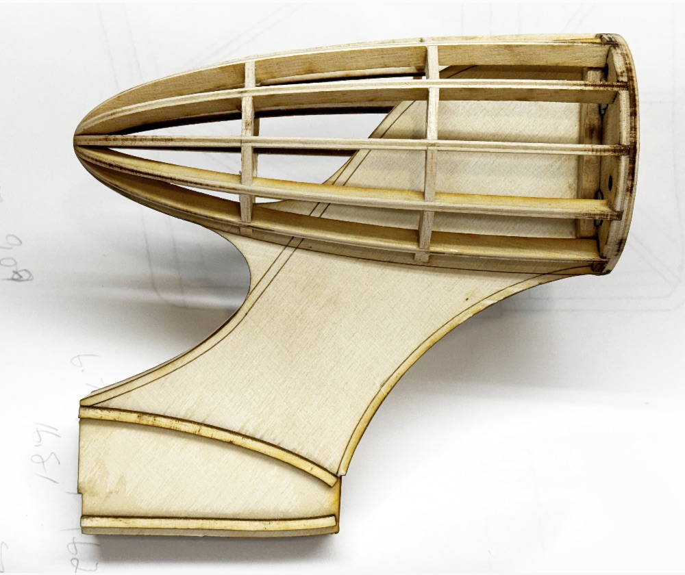
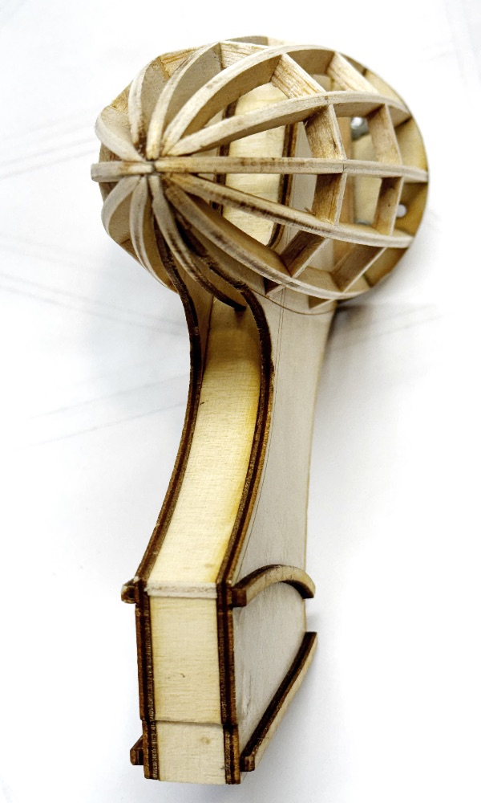

Drake 65 Building Notes | |
|---|---|
|
 | |
|
Welcome!Given the Drake's popularity, I've decided to document my build for those who have purchased the plans, or are considering doing so. I will continue to add more information to this page as time allows.The Drake 65 was inspired by Ken Willard's original 15 powered 48-inch Drake II, which first appeared as a plan feature in the October 1980 issue of Model Aviation. Willard's elegant design instantly captivated my imagination. So much so, that this is the fourth version I have built since his original article was published. As stated elsewhere, my primary design goal for this project was to keep it as light as possible for slow motion cruising and pattern work in calm conditions, while still keeping it robust enough for regular flying sessions. Modifying the basic design to a stick structure with minimal sheeting was instrumental in saving weight. Replacing the original's glow engine with electric power allowed further lightening of the structure, and also eliminates potential noise complaints. Let's face it. A large percentage of the population enjoys spending time at local lakes during much of our flying season, and it just makes sense to be a good neighbor. But I am getting ahead of myself here, so let's get building! | |
Fuselage | |
|

Wing | |
|
Tail Surfaces | |
|
Engine Pylon

 | |
|
Copyright 2025, Thayer Syme. All rights reserved | |